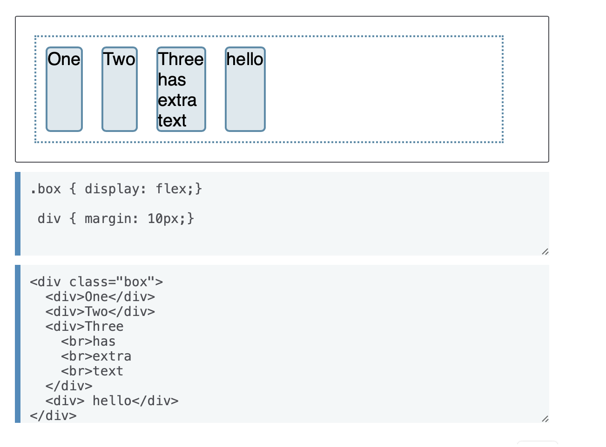

S03T01: Display Flex vs Grid
Elaborado por: Valentina Méndez
display:flex
Al poner la propiedad display como "flex" estamos diciendo que el contenedor es flex y se comportara como tal. El resultado es que todos los ítems se alinearán en una solo fila, usando el tamaño del contenedor como su tamaño en el eje principal. Si hay más ítems de los que caben en el contenedor, estos no pasarán más abajo si no que sobrepasarán el margen. Si hay ítems más altos que otros, todos los ítems serán ajustados en el eje cruzado para alcanzar al mayor.
Características
Al crear un contenedor flex todos los ítems flex contenidos se comportarán de la siguiente manera:
- Los ítems empiezan desde el margen inicial sobre el eje principal.
- Los ítems se despliegan sobre una fila (la propiedad flex-direction por defecto es row).
- Los ítems no se ajustan en la dimensión principal, pero se pueden contraer.
- Los ítems se ajustarán para llenar el tamaño del eje cruzado.
- La propiedad flex-basis es definida como auto.
Ejemplo de uso
